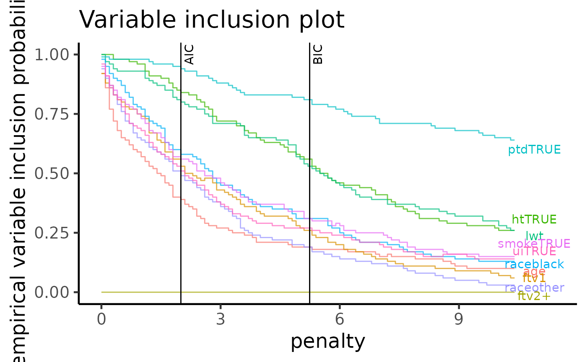
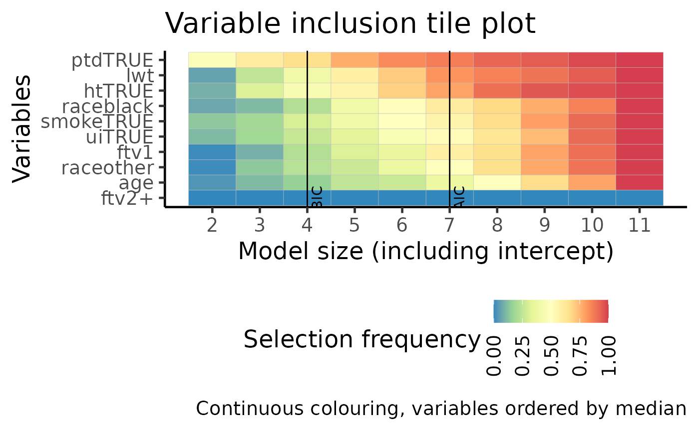

Birthweight data example
Kevin Y.X. Wang
School of Mathematics and Statistics, The University of Sydney, AustraliaGarth Tarr
School of Mathematics and Statistics, The University of Sydney, AustraliaJean Y.H. Yang
School of Mathematics and Statistics, The University of Sydney, AustraliaSamuel Mueller
School of Mathematics and Statistics, The University of Sydney, AustraliaSource:
vignettes/birthweight.Rmd
birthweight.RmdIntroduction
In this vignette, we will apply APES on the birthweight data from the MASS package. In this data, there are 189 observations and the response variable is a binary variable indicating if an infant is in the low-weight group. There are eight predictor variables in total comprising of two numeric variables (age and lwt) and six others are factor variables.
Setting up the data
## ── Attaching packages ─────────────────────────────────────── tidyverse 1.3.0 ──## ✔ ggplot2 3.3.2 ✔ purrr 0.3.4
## ✔ tibble 3.0.3 ✔ dplyr 1.0.2
## ✔ tidyr 1.1.2 ✔ stringr 1.4.0
## ✔ readr 1.3.1 ✔ forcats 0.5.0## ── Conflicts ────────────────────────────────────────── tidyverse_conflicts() ──
## ✖ dplyr::filter() masks stats::filter()
## ✖ dplyr::lag() masks stats::lag()
## ✖ dplyr::select() masks MASS::select()theme_set(theme_classic(14) + theme(legend.position = "bottom"))
Single run of APES on birthweight data
APES requires a full model as input. We will first fit a full model using the glm function.
## Estimate Std. Error z value Pr(>|z|)
## (Intercept) 0.82 1.24 0.66 0.51
## age -0.04 0.04 -0.96 0.34
## lwt -0.02 0.01 -2.21 0.03
## raceblack 1.19 0.54 2.22 0.03
## raceother 0.74 0.46 1.60 0.11
## smokeTRUE 0.76 0.43 1.78 0.08
## ptdTRUE 1.34 0.48 2.80 0.01
## htTRUE 1.91 0.72 2.65 0.01
## uiTRUE 0.68 0.46 1.46 0.14
## ftv1 -0.44 0.48 -0.91 0.36
## ftv2+ 0.18 0.46 0.39 0.69apes_result = apes(model = full_model) apes_result
## Time taken:
## Time difference of 0.0001223167 mins
##
## APES model selection data frame:
## # A tibble: 10 x 7
## model_name model_size ic_opt_models apes_mle_loglike mle_aic mle_bic status
## <chr> <dbl> <chr> <dbl> <dbl> <dbl> <chr>
## 1 apes_model… 2 "apes_min_bi… -111. 226. 232. leaps_…
## 2 apes_model… 3 "" -109. 223. 233. leaps_…
## 3 apes_model… 4 "" -107. 223. 236. leaps_…
## 4 apes_model… 5 "" -106. 222. 238. leaps_…
## 5 apes_model… 6 "" -102. 216. 236. leaps_…
## 6 apes_model… 7 "apes_min_ai… -100. 214. 237. leaps_…
## 7 apes_model… 8 "" -99.4 215. 241. leaps_…
## 8 apes_model… 9 "" -98.9 216. 245. leaps_…
## 9 apes_model… 10 "" -97.8 216. 248. leaps_…
## 10 apes_model… 11 "" -97.9 218. 253. leaps_…Looking at the result, we see that a single run of APES only takes a fraction of a second and the selected model by BIC and AIC are of size 2 and 7 respectively.
However, previous studies into this data suggested that this data possess several interesting characteristics, one being that the variable selection instability. One way we can confirm this instability is through bootstrapping on the observations, apply variable selection method and average the result. We will do this in the next section.
Bootstrapping
In most practical cases, a single run of any variable selection procedure will not produce stable results. In order to explore stability of variable selection in this case, statistical literatures have examined the stability of variable selection using the bootstrap sampling procedure on the 189 observations. The motivation of APES is to make exhaustive selection to be fast and thus ideally suited for such a procedure
boot_result = APES::apes(full_model, n_boot = 100) boot_result
Variable importance plot
The variable importance plot is a technique explored in Murray et. al. (2013) and it shows the stability of each variable as a probability of selection against different strength of penalty on the general information criterion. The most stable variable in selection are those which has a high probability of selection with increasingly higher levels of penalisation.
We can see that the variables in order of strength of stability are ptd, ht and lwt.
plot(boot_result, type = "vip")

Tile version of VIP plot
This plot is identical in construction as the VIP plot above. However, the probability of selection is used as colours in a tile plot. The most stably selected variables are on the top of the y-axis.
plot(boot_result, type = "vip_tile")
## $apes_mle_beta_binary_plotdf
## # A tibble: 110 x 5
## variables model_name freq_selected model_size freq_selected_category
## <fct> <fct> <dbl> <int> <fct>
## 1 intercept apes_model_2 1 2 (0.8,1]
## 2 intercept apes_model_3 1 3 (0.8,1]
## 3 intercept apes_model_4 1 4 (0.8,1]
## 4 intercept apes_model_5 1 5 (0.8,1]
## 5 intercept apes_model_6 1 6 (0.8,1]
## 6 intercept apes_model_7 1 7 (0.8,1]
## 7 intercept apes_model_8 1 8 (0.8,1]
## 8 intercept apes_model_9 1 9 (0.8,1]
## 9 intercept apes_model_10 1 10 (0.8,1]
## 10 intercept apes_model_11 1 11 (0.8,1]
## # … with 100 more rows
##
## $var_tile_plot
##
## $var_tile_plot_category
Model averaged coefficient plot
During the bootstrap computation, APES records the best AIC/BIC models across all bootstrap runs. The model estimates from each of these models can be cumulatively averaged across the number of bootstrap runs to examine the stability of the selection. This plot allows us to examine the stability of the model coefficients whereas the previous VIP plots shows only the stability of variable selection.
plot(boot_result, type = "ma")

Information criterion pathway plot
During the bootstrap computation, APES records the best AIC/BIC models across all bootstrap runs. The AIC/BIC-best model do not always coincide. One way to examine the differences between these models is to look into the model size of the best selected model. Here, each bootstrap run is represented by a black curve with the BIC-selected model of each run coloured as red. We can see that it is rare of a model of size 2 to be selected by the BIC, with the majority of the models are between 3 and 6 in model size. This is a reason why we should perform such a bootstrap procedure to examine the model selection stability as a single run of APES only identifies a model of size two under the BIC selection criterion.
plot(boot_result, type = "path", order = "BIC")

Reference
Mueller, S. and Welsh, A. H. (2010), On model selection curves. International Statistical Review, 78:240-256. doi: 10.1111/j.1751-5823.2010.00108.x
Murray, K., Heritier, S. and Mueller, S. (2013), Graphical tools for model selection in generalized linear models. Statistics in Medicine, 32:4438-4451. doi: 10.1002/sim.5855
Tarr G, Mueller S and Welsh AH (2018). mplot: An R Package for Graphical Model Stability and Variable Selection Procedures. Journal of Statistical Software, 83(9), pp. 1-28. doi: 10.18637/jss.v083.i09
Wang, K. Y., Tarr, G., Yang, J. Y., & Mueller, S. (2019). Fast and approximate exhaustive variable selection for generalised linear models with APES. Australian & New Zealand Journal of Statistics, 61(4), 445–465. https://doi.org/10.1111/anzs.12276
Session Info
## R version 4.0.2 (2020-06-22)
## Platform: x86_64-apple-darwin17.0 (64-bit)
## Running under: macOS Catalina 10.15.6
##
## Matrix products: default
## BLAS: /Library/Frameworks/R.framework/Versions/4.0/Resources/lib/libRblas.dylib
## LAPACK: /Library/Frameworks/R.framework/Versions/4.0/Resources/lib/libRlapack.dylib
##
## locale:
## [1] en_US.UTF-8/en_US.UTF-8/en_US.UTF-8/C/en_US.UTF-8/en_US.UTF-8
##
## attached base packages:
## [1] stats graphics grDevices utils datasets methods base
##
## other attached packages:
## [1] forcats_0.5.0 stringr_1.4.0 dplyr_1.0.2 purrr_0.3.4
## [5] readr_1.3.1 tidyr_1.1.2 tibble_3.0.3 ggplot2_3.3.2
## [9] tidyverse_1.3.0 MASS_7.3-51.6 APES_0.6.0
##
## loaded via a namespace (and not attached):
## [1] httr_1.4.2 jsonlite_1.7.1 splines_4.0.2
## [4] modelr_0.1.8 gtools_3.8.2 assertthat_0.2.1
## [7] blob_1.2.1 cellranger_1.1.0 yaml_2.2.1
## [10] globals_0.12.5 pillar_1.4.6 backports_1.1.9
## [13] lattice_0.20-41 glue_1.4.2 quadprog_1.5-8
## [16] digest_0.6.25 RColorBrewer_1.1-2 rvest_0.3.6
## [19] colorspace_1.4-1 htmltools_0.5.0 Matrix_1.2-18
## [22] plyr_1.8.6 pkgconfig_2.0.3 broom_0.7.0
## [25] listenv_0.8.0 haven_2.3.1 scales_1.1.1
## [28] cpp11_0.2.1 farver_2.0.3 generics_0.0.2
## [31] ellipsis_0.3.1 withr_2.2.0 furrr_0.1.0
## [34] cli_2.0.2 survival_3.1-12 magrittr_1.5
## [37] crayon_1.3.4 readxl_1.3.1 memoise_1.1.0
## [40] evaluate_0.14 fs_1.5.0 future_1.18.0
## [43] fansi_0.4.1 xml2_1.3.2 tools_4.0.2
## [46] directlabels_2020.6.17 hms_0.5.3 lifecycle_0.2.0
## [49] munsell_0.5.0 reprex_0.3.0 compiler_4.0.2
## [52] pkgdown_1.6.0.9000 systemfonts_0.3.1 rlang_0.4.7
## [55] grid_4.0.2 rstudioapi_0.11 leaps_3.1
## [58] labeling_0.3 rmarkdown_2.3 gtable_0.3.0
## [61] codetools_0.2-16 DBI_1.1.0 reshape2_1.4.4
## [64] R6_2.4.1 lubridate_1.7.9 knitr_1.29
## [67] utf8_1.1.4 rprojroot_1.3-2 ragg_0.3.1
## [70] desc_1.2.0 stringi_1.5.3 parallel_4.0.2
## [73] Rcpp_1.0.5 vctrs_0.3.4 dbplyr_1.4.4
## [76] tidyselect_1.1.0 xfun_0.17